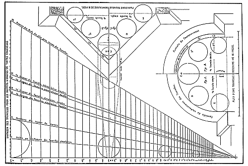

Revue générale de l'Architecture et des Travaux Publics
Dirigée par MR CÉZAR DALY, ARCHITECTE.
Année 1856.
(XVIIe ANNÉE DE LA FONDATION)
Pl. 25.
Diapason des tuyaux de montre et des tourelles pour tous les buffets d'orgues.

Ce document ne présente d'intérêt que s'il est
imprimé. Aussi est-il disponible en version graphique au
format TIFF [96 360 octets] ou au
format PDF [109 819 octets].